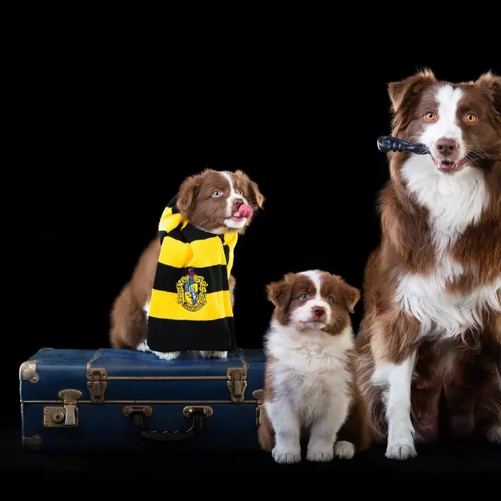
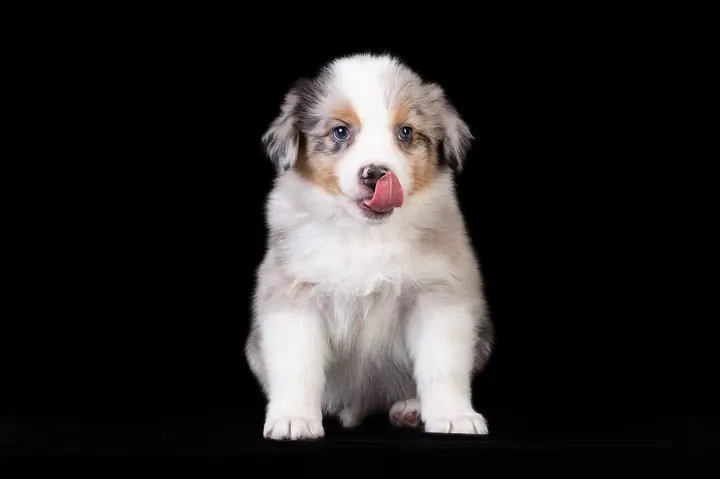

Ateliérové portréty psů
Profesionální portréty vašeho psa ve studiu, na černém i světlém pozadí. Fotím jednotlivce, štěňata i celé smečky, klidně i se členy rodiny.

Studiový a produktový fotograf psů
Jmenuji se Royal Dog Portraits, tedy přesněji: za touhle značkou stojím já, studiový a produktový fotograf psů z Prahy. Ve svém ateliéru fotím psí portréty na černém i světlém pozadí, od štěňat po celé smečky. Pracuji taky pro značky, které chtějí mít psy na fotkách opravdu krásně.
Zeptat se na termín
Profesionální portréty vašeho psa ve studiu, na černém i světlém pozadí. Fotím jednotlivce, štěňata i celé smečky, klidně i se členy rodiny.
Fotky psů pro značky, krmiva a chovatelské potřeby. Ateliérové snímky, které můžete použít na web, do e-shopu i na sociální sítě.
Fotím psy v ateliéru. Pracuji se světlem, černým pozadím a trpělivostí, aby na fotce vynikla srst, oči a hlavně povaha vašeho psa. Mým heslem je „Z lásky ke psům, světlem korunováno“.
Kromě portrétů pro majitele dělám komerční focení pro značky z psího světa, třeba krmiva nebo psí módu. Rád fotím i štěňata a celé vrhy, a když je potřeba, k psovi se přidají i děti.
O tom, co dělám, rád mluvím. Na Instagramu sdílím Royalácké fototipy, jak připravit psa (i sebe) na focení, a ateliérovou psí fotografii učím i na vlastních workshopech.
Ozvěte se přes formulář, e-mailem nebo do zpráv na Instagramu. Domluvíme se, koho budeme fotit a co od fotek čekáte.
Poradím vám, jak připravit psa i sebe, aby bylo focení pro všechny v klidu a pohodě.
Ve studiu dáme psovi čas se rozkoukat. Pracujeme s pamlsky, hračkami a pauzami podle toho, co mu sedí.
Z focení vyberu nejlepší snímky a pečlivě je upravím, aby vynikla srst, světlo i povaha vašeho psa.
Nejjednodušeji zprávou na Instagramu, případně e-mailem na fotograf@royaldogportraits.cz nebo přes formulář tady na webu.
Než se uvidíme, pošlu vám pár tipů. Hodí se, když pes přijde vyvenčený a v klidu a s sebou máte jeho oblíbené pamlsky nebo hračku.
Ano. Fotím štěňata, celé vrhy i více psů pohromadě a klidně i s dětmi nebo jinými členy rodiny.
Ano, fotím pro značky z psího světa, například krmiva nebo psí módu. Napište mi, co potřebujete, a domluvíme se na podobě focení.